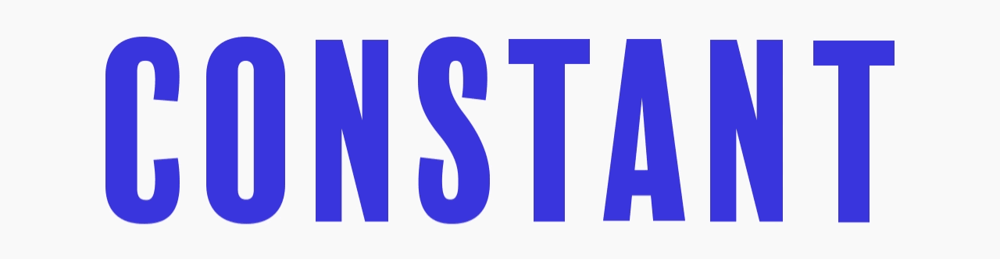
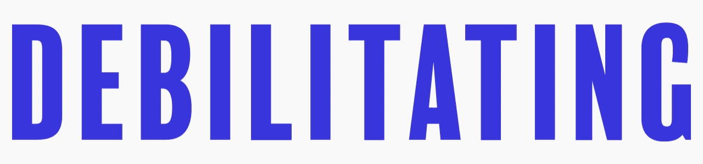

What words come to mine when I say “mental illness”?

What words come to mine when I say “mental illness”?

What words come to mine when I say “mental illness”?
When I think “illness” I think, "Hey, that's a bummer, you're sick. Let's get you some medicine and maybe some soup".
But when you throw “mental” in there suddenly the game changes and I don't know why.
Christine Bosch
People treat it like it's something other than illness, like it's scary or shameful or something you should hide.
I think that's dumb. I think I would like it if people offered more soup*.